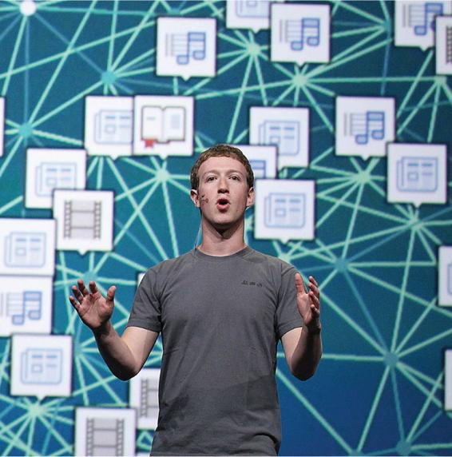

Networks are crucial aspects of human life. On the one hand, they can lead to the death of large numbers of people, as occurred in the COVID-19 pandemic. But they also can serve us in many positive ways. You are likely to rely on your networks for a broad range of contacts, from getting into a sorority or fraternity to scoring a summer internship. But understanding how these networks work highlights important differences between biological and social outbreaks (Kucharski, 2020). When a virus spreads through a population, the closer the contact between people, the greater the chance for infection. But in social life, the opposite can also be true. Sociologist Mark Granovetter (1973) demonstrated that there can be enormous strength in “weak ties,” particularly among higher socioeconomic groups. Upper-level professional and managerial employees are likely to hear about new jobs through connections such as distant relatives or remote acquaintances. Such weak ties can be of great benefit because relatives or acquaintances tend to have very different sets of connections from one’s closer friends, whose social contacts are likely to be similar to one’s own. Among lower socioeconomic groups, Granovetter argued, weak ties are not necessarily bridges to other networks and so do not really widen one’s opportunities (see also Knoke 1990; Marsden and Lin 1982; Wellman, Carrington, and Hall 1988).
Most people rely on their personal networks to gain advantages, but not everyone has equal access to powerful networks. In general, whites and men have more advantageous social networks than do ethnic minorities and women. Some sociologists argue, for example, that women’s business, professional, and political networks are fewer and weaker than men’s, so that women’s power in these spheres is reduced (Brass 1985). Yet as more and more women move up into higher-level occupational and political positions, the resulting networks can foster further advancement. One study found that women are more likely to be hired or promoted into job levels that already have a high proportion of women (Cohen, Broschak, and Haveman 1998).
The Internet as Social Network
Our opportunities to belong to and access social networks have skyrocketed in recent years due to the Internet. Until the early 1990s, when the World Wide Web was developed, there were few Internet users outside of university and scientific communities. By the end of 2017, however, an estimated 287 million Americans were using the Internet (Internet World Stats 2017), and while 52 percent of American adults used the Internet in 2000, 89 percent were online in 2018 (Pew Research Center 2019b). With such rapid communication and global reach, it is now possible to radically extend one’s personal networks. Fully 57 percent of American teens have made new friends online (Lenhart 2015). It also enables people who might otherwise lack contact with others to become part of global networks. For example, people too ill to leave their homes can join online social networks or consult message boards, people in small rural communities can now take online college courses (Lewin 2012), and long-lost high school friends can reconnect via Facebook.
Launched in 2004, Facebook has more than 2.45 billion monthly active users and is one of the most popular tools for building online social networks.
The Internet fosters the creation of new relationships, often without the emotional and social baggage or constraints that go along with face-to-face encounters. In the absence of the usual physical and social cues, such as skin color or residential address, people can get together electronically on the basis of shared interests, such as gaming, rather than similar social characteristics. Factors such as social position, wealth, race, ethnicity, gender, and physical disability are less likely to cloud the social interaction (Coate 1994; Jones 1995; Kollock and Smith 1996). In fact, technologies like Twitter allow people from all walks of life to catch glimpses into the lives of celebrities (as well as noncelebs).
One limitation of Internet-based social networks is that not everyone has equal access to the Internet. Lower-income persons and ethnic minorities are less likely than wealthier persons and whites to have Internet access. But while a digital divide remains, the gaps have narrowed considerably in recent years. For example, in 2000, 81 percent of American adults in households earning $75,000 or more a year used the Internet, compared to just 34 percent of those who made less than $30,000. By 2019, however, this nearly 50 percent gap had narrowed to 16 percent, with 82 percent of those who make less than $30,000 per year now using the Internet (Pew Research Center, 2019b). There remains a larger gap in usage by level of education: While 97 percent of adults with a college degree are Internet users, that proportion drops to 65 percent for those with less than a high school education. A similar gap in Internet use exists between young adults (ages eighteen to twenty-nine) and older adults (ages sixty-five and older): While 100 percent of young adults are using the Internet, the same can be said of only 73 percent of older adults. This pattern is not limited to the United States; rates of Internet use are creeping up across the globe, enabling individuals to connect with anyone in the world who shares their interests.